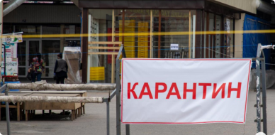
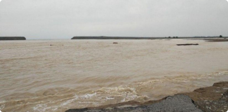
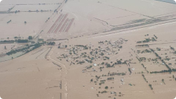

in Uzbekistan
2753
2245
12
Mirziyoyev explained why the Sardoba Reservoir was built.

Quarantine in Uzbekistan extended until June 1

Shallow Sardoba: natural disaster or human error?
Investigators are examining four theories regarding the Sardoba Dam breach.
Seven more cases of coronavirus have been identified.
Results of the second month of quarantine
Want to be the first to hear the latest news? Turn on notifications!

A criminal case has been opened following the dam breach at the Sardoba Reservoir, the press service of the Prosecutor General's Office of Uzbekistan reported.
A criminal case has been opened following the dam breach at the Sardoba Reservoir, the press service of the Prosecutor General's Office of Uzbekistan reported.
A criminal case has been opened following the dam breach at the Sardoba Reservoir, the press service of the Prosecutor General's Office of Uzbekistan reported.
A criminal case has been opened following the dam breach at the Sardoba Reservoir, the press service of the Prosecutor General's Office of Uzbekistan reported.
A criminal case has been opened following the dam breach at the Sardoba Reservoir, the press service of the Prosecutor General's Office of Uzbekistan reported.
A criminal case has been opened following the dam breach at the Sardoba Reservoir, the press service of the Prosecutor General's Office of Uzbekistan reported.
A criminal case has been opened in connection with the Sardoba Reservoir breach.
A criminal case has been opened in connection with the Sardoba Reservoir breach.
A criminal case has been opened in connection with the Sardoba Reservoir breach.
A criminal case has been opened in connection with the Sardoba Reservoir breach.
Install the NAMANGANLIKLAR24 mobile app and have all the news in your pocket!